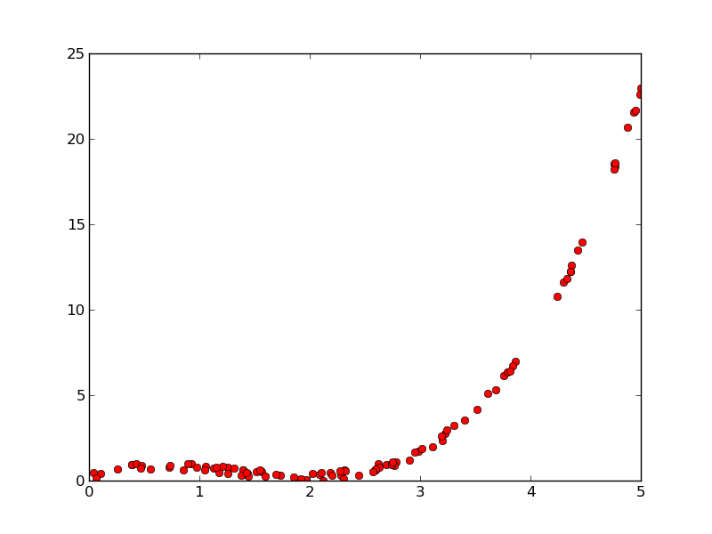
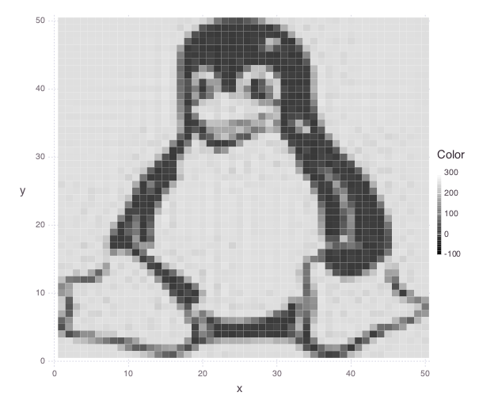

LineaLeastSquares.jl Examples¶
This tutorial showcases LinearLeastSquares.jl through a few involved examples of linearly constrained least squares problems. We’ll refer to LinearLeastSquares.jl as “LLS” throughout. The plots generated by the following examples use the Gadfly package. The documentation on how to use Gadfly can be found here, but by no means is it necessary to read unless you would like to create plots for yourself. To install Gadfly, run the following command in a Julia shell
Pkg.add("Gadfly")
Some of the examples will also use data files, which can all be found here.
Regression¶
Regression is the problem of trying to fit a function to some data. In this example, we will frame some simple regression problems as unconstrained least squares problems for LLS to solve.
We are given n points, represented by two n-by-1 vectors, x_data and y_data. The x and y coordinates of the i-th point are given by the i-th entries of x_data and y_data, respectively.
We’ll start by generating and visualizing some data to get a better sense of the problem at hand:
# Set the random seed to get consistent data
srand(1)
# Number of examples to use
n = 100
# Specify the true value of the variable
true_coeffs = [2; -2; 0.5]
# Generate data
x_data = rand(n, 1) * 5
x_data_expanded = hcat([x_data .^ i for i in 1 : 3]...)
y_data = x_data_expanded * true_coeffs + 0.5 * rand(n, 1)
p = plot(
x=x_data, y=y_data, Geom.point,
Theme(panel_fill=color("white"))
)
The following graph of the data will appear
Linear Regression¶
We will first try to fit a line to the data. A general function for a line is
where \(\alpha\) is the offset and \(\beta\) is the slope. We would like to pick \(\alpha\) and \(\beta\) so that our data points lie “close” to our line. For a point with coordinates \(x\) and \(y\) the residual between the point and our line is defined as
One reasonable way to measure the how different line is from the data is to sum the squares of the residuals between each point in the data and the line:
We would like to choose \(\alpha\) and \(\beta\) to minimize this error. We can now frame this problem in Julia code and solve our problem using LLS:
slope = Variable()
offset = Variable()
line = offset + x_data * slope
residuals = line - y_data
fit_error = sum_squares(residuals)
optval = minimize!(fit_error)
# plot the data and the line
t = [0; 5; 0.1]
p = plot(
layer(x=x_data, y=y_data, Geom.point),
layer(x=t, y=evaluate(slope) * t + evaluate(offset), Geom.line),
Theme(panel_fill=color("white"))
)
The line of best fit on our data is shown below:

Quadratic Regression¶
A line is probably not the best function to fit to this data. Instead, let’s try to fit a quadratic function, which has the form:
where the new coefficient \(\gamma\) corresponds to the quadratic term A similar residual function from the linear regression example can be used here; we measure the error of our quadratic fit by summing the squares of the residuals
Again, we pick our coefficients to minimize the error. Here is the Julia code to solve this problem using LLS and plot the quadratic:
quadratic_coeff = Variable()
slope = Variable()
offset = Variable()
quadratic = offset + x_data * slope + quadratic_coeff * x_data .^ 2
residuals = quadratic - y_data
fit_error = sum_squares(residuals)
optval = minimize!(fit_error)
# Create some evenly spaced points for plotting, again replicate powers
t = reshape([0 : 0.1 : 5], length([0 : 0.1 : 5]), 1)
t_squared = t .^ 2
# Plot our regressed function
p = plot(
layer(x=x_data, y=y_data, Geom.point),
layer(x=t, y=evaluate(offset) + t * evaluate(slope) + t_squared * evaluate(quadratic_coeff), Geom.line),
Theme(panel_fill=color("white"))
)
A much better fit than the line!
Control¶
A simple control problem on a system usually involves a variable \(x(t)\) that denotes the state of the system over time, and a variable \(u(t)\) that denotes the input into the system over time. Linear constraints are used to capture the evolution of the system over time:
where the numerical matrices \(A\) and \(B\) are called the dynamics and input matrices, respectively.
The goal of the control problem is to find a sequence of inputs \(u(t)\) that will allow the state \(x(t)\) to achieve specified values at certain times. For example, we can specify initial and final states of the system:
Additional states between the initial and final states can also be specified. These are known as waypoint constraints. Often, the input and state of the system will have physical meaning, so we often want to find a sequence inputs that also minimizes a least squares objective like the following:
where \(F\) and \(G\) are numerical matrices.
We’ll now apply the basic format of the control problem to an example of controlling the motion of an object in a fluid over \(T\) intervals, each of \(h\) seconds. The state of the system at time interval \(t\) will be given by the position and the velocity of the object, denoted \(p(t)\) and \(v(t)\), while the input will be forces applied to the object, denoted by \(f(t)\). By the basic laws of physics, the relationship between force, velocity, and position must satisfy:
Here, \(a(t)\) denotes the acceleration at time \(t\), for which we we use \(a(t) = f(t) / m + g - d v(t)\), where \(m\), \(d\), \(g\) are constants for the mass of the object, the drag coefficient of the fluid, and the acceleration from gravity, respectively.
Additionally, we have our initial/final position/velocity conditions:
One reasonable objective to minimize would be
We would like to keep both the forces small to perhaps save fuel, and keep the velocities small for safety concerns. Here \(\mu\) serves as a parameter to control which part of the objective we deem more important, keeping the velocity small or keeping the force small.
The following code builds and solves our control example:
# Some constraints on our motion
# The object should start from the origin, and end at rest
initial_velocity = [-20; 100]
final_position = [100; 100]
T = 100 # The number of timesteps
h = 0.1 # The time between time intervals
mass = 1 # Mass of object
drag = 0.1 # Drag on object
g = [0, -9.8] # Gravity on object
# Declare the variables we need
position = Variable(2, T)
velocity = Variable(2, T)
force = Variable(2, T - 1)
# Create a problem instance
mu = 1
constraints = []
# Add constraints on our variables
for i in 1 : T - 1
constraints += position[:, i + 1] == position[:, i] + h * velocity[:, i]
end
for i in 1 : T - 1
acceleration = force[:, i]/mass + g - drag * velocity[:, i]
constraints += velocity[:, i + 1] == velocity[:, i] + h * acceleration
end
# Add position constraints
constraints += position[:, 1] == 0
constraints += position[:, T] == final_position
# Add velocity constraints
constraints += velocity[:, 1] == initial_velocity
constraints += velocity[:, T] == 0
# Solve the problem
optval = minimize!(sum_squares(force), constraints)
We can plot the trajectory taken by the object. The blue point denotes the initial position, and the green point denotes the final position.
pos = evaluate(position)
p = plot(
layer(x=[pos[1, 1]], y=[pos[2, 1]], Geom.point, Theme(default_color=color("blue"))),
layer(x=[pos[1, T]], y=[pos[2, T]], Geom.point, Theme(default_color=color("green"))),
layer(x=pos[1, :], y=pos[2, :], Geom.line(preserve_order=true)),
Theme(panel_fill=color("white"))
)

We can also see how the magnitude of the force changes over time.
p = plot(x=1:T, y=sum(evaluate(force).^2, 1), Geom.line, Theme(panel_fill=color("white")))
Image Processing¶
Tomography¶
Tomography is the process of reconstructing a density distribution from given integrals over sections of the distribution. In our example, we will work with tomography on black and white images. Suppose \(x\) be the vector of \(n\) pixel densities, with \(x_j\) denoting how white pixel \(j\) is. Let \(y\) be the vector of \(m\) line integrals over the image, with \(y_i\) denoting the integral for line \(i\). We can define a matrix \(A\) to describe the geometry of the lines. Entry \(A_{ij}\) describes how much of pixel \(j\) is intersected by line \(i\). Assuming our measurements of the line integrals are perfect, we have the relationship that
However, anytime we have measurements, there are usually small errors that occur. Therefore it makes sense to try to minimize
This is simply an unconstrained least squares problem; something we can readily solve in LLS!
line_mat_x = readdlm("tux_sparse_x.txt")
line_mat_y = readdlm("tux_sparse_y.txt")
line_mat_val = readdlm("tux_sparse_val.txt")
line_vals = readdlm("tux_sparse_lines.txt")
# Form the sparse matrix from the data
# Image is 50 x 50
img_size = 50
# The number of pixels in the image
num_pixels = img_size * img_size
line_mat = spzeros(3300, num_pixels)
num_vals = length(line_mat_val)
for i in 1:num_vals
x = int(line_mat_x[i])
y = int(line_mat_y[i])
line_mat[x + 1, y + 1] = line_mat_val[i]
end
x = Variable(num_pixels)
objective = sum_squares(line_mat * x - line_vals)
optval = minimize!(objective)
rows = zeros(img_size*img_size)
cols = zeros(img_size*img_size)
for i = 1:img_size
for j = 1:img_size
rows[(i-1)*img_size + j] = i
cols[(i-1)*img_size + j] = img_size + 1 - j
end
end
p = plot(
x=rows, y=cols, color=reshape(evaluate(x), img_size, img_size), Geom.rectbin,
Scale.ContinuousColorScale(Scale.lab_gradient(color("black"), color("white")))
)
The final result of the tomography will look something like
Machine Learning¶
Binary Classification¶
One common problem found in machine learning is the classification of a group of objects into two subgroups. In this example, we will try to separate sports articles from other texts in a collection of documents.
When classifying text documents, one of the most common techniques is to build a term-by-document frequency matrix \(F\), where \(F_{ij}\) reflects the frequency of term \(j\) in document \(i\).
The documents are then split into a training and testing set. For each document in the training example, we also label the document with a label. In this case, sports articles are labelled with a \(1\) and all other text documents are labelled with a \(-1\). One reasonable approach to classify the documents is to model the label as an affine function of the term frequencies of the document:
The goal now is to find a scalar \(v\) and a weight vector \(w\), where \(w_j\) reflects how important term \(j\) is in determining the label of the document. In our context, a positive value means that the term is often seen in sports articles, while a negative value means the term is often seen in the other documents. One reasonable approach to finding the best \(w\) and \(v\) is to minimize the following objective:
The first part of the objective is to ensure that our linear model actually closely reproduces the labels of our training documents. The second part of the objective ensures that the components of \(w\) are relatively small. Keeping \(w\) small allows our model to behave better on documents not in the training set. The regularization parameter \(\lambda\) is used to control how much we should prioritize keeping \(w\) small versus how close the affine function should fit the labels.
Here is the LLS code:
# read in the data
include("MatrixMarket.jl")
using MatrixMarket
A = full(MatrixMarket.mmread("largeCorpus.mtx"))
# extract the classes of each document
classes = A[:,1]
# TODO: modify classes so that 4 5 6 are 1 2 3
classes[classes .> 3] = classes[classes .> 3] - 3
A = A[:, 2:end]
# split into train/test
numData = size(A, 1)
data = randperm(numData)
ind = floor(numData*0.7)
training = data[1:ind]
test = data[ind+1:end]
trainDocuments = A[training,:]
trainClasses = classes[training,:]
testDocuments = A[test,:]
testClasses = classes[test,:]
# change all other than sports to -1 (sports is 1)
holdClass = 1
trainClasses[trainClasses .!= holdClass] = -1
trainClasses[trainClasses .== holdClass] = 1
testClasses[testClasses .!= holdClass] = -1
testClasses[testClasses .== holdClass] = 1
# build the problem and solve with LLS
lambda = 100
w = Variable(size(A, 2))
v = Variable()
objective = sum_squares(trainDocuments * w + v - trainClasses) + lambda * sum_squares(w)
optval = minimize!(objective)
We can now sort our weight vector \(w\) to see which words were the most indicative of sports articles and which were most indicative of nonsports.
# print out the 5 words most indicative of sports and nonsports
words = String[]
f = open("largeCorpusfeatures.txt")
for i = 1:length(evaluate(w))
push!(words, readline(f))
end
indices = sortperm(vec(evaluate(w)))
for i = 1:5
print(words[indices[i]])
end
for i = 0:4
print(words[indices[length(words) - i]])
end
Each run will yield different words, but it’ll be clear which words come from sports articles.
Time Series Analysis¶
A time series is a sequence of data points, each associated with a time. In our example, we will work with a time series of daily temperatures in the city of Melbourne, Australia over a period of a few years. Let \(x\) be the vector of the time series, and \(x_i\) denote the temperature in Melbourne on day \(i\). Here is a picture of the time series:

We can quickly compute the mean of the time series to be \(11.2\). If we were to always guess the mean as the temperature of Melbourne on a given day, the RMS error of our guesswork would be \(4.1\). We’ll try to lower this RMS error by coming up with better ways to model the temperature than guessing the mean.
A simple way to model this time series would be to find a smooth curve that approximates the yearly ups and downs. We can represent this model as a vector \(s\) where \(s_i\) denotes the temperature on the \(i\)-th day. To force this trend to repeat yearly, we simply want
for each applicable \(i\).
We also want our model to have two more properties. The first is that the temperature on each day in our model should be relatively close to the actual temperature of that day. The second is that our model needs to be smooth, so the change in temperature from day to day should be relatively small. The following objective would capture both properties:
where \(\lambda\) is the smoothing parameter. The larger \(\lambda\) is, the smoother our model will be.
The following code uses LLS to find and plot the model:
temps = readdlm("melbourne_temps.txt", ',')
n = size(temps)[1]
p = plot(
x=1:1500, y=temps[1:1500], Geom.line,
Theme(panel_fill=color("white"))
)
# draw(PNG("melbourne.png", 16cm, 12cm), p)
yearly = Variable(n)
eq_constraints = []
for i in 365 + 1 : n
eq_constraints += yearly[i] == yearly[i - 365]
end
smoothing = 100
smooth_objective = sum_squares(yearly[1 : n - 1] - yearly[2 : n])
optval = minimize!(sum_squares(temps - yearly) + smoothing * smooth_objective, eq_constraints)
residuals = temps - evaluate(yearly)
# Plot smooth fit
p = plot(
layer(x=1:1500, y=evaluate(yearly)[1:1500], Geom.line, Theme(default_color=color("red"), line_width=2px)),
layer(x=1:1500, y=temps[1:1500], Geom.line),
Theme(panel_fill=color("white"))
)

We can also plot the residual temperatures, \(r\), define as \(r = x - s\).
# Plot residuals for a few days
p = plot(
x=1:100, y=residuals[1:100], Geom.line,
Theme(default_color=color("green"), panel_fill=color("white"))
)

Our smooth model has a RMS error of \(2.7\), a significant improvement from just guessing the mean, but we can do better.
We now make the hypothesis that the residual temperature on a given day is some linear combination of the previous \(5\) days. Such a model is called autoregressive. We are essentially trying to fit the residuals as a function of other parts of the data itself. We want to find a vector of coefficients \(a\) such that
This can be done by simply minimizing the following sum of squares objective
The following LLS code solves this problem and plots our autoregressive model against the actual residual temperatures:
# Generate the residuals matrix
ar_len = 5
residuals_mat = residuals[ar_len : n - 1]
for i = 1:ar_len - 1
residuals_mat = [residuals_mat residuals[ar_len - i : n - i - 1]]
end
# Solve autoregressive problem
ar_coef = Variable(ar_len)
optval2 = minimize!(sum_squares(residuals_mat * ar_coef - residuals[ar_len + 1 : end]))
# plot autoregressive fit of daily fluctuations for a few days
ar_range = 1:145
day_range = ar_range + ar_len
p = plot(
layer(x=day_range, y=residuals[day_range], Geom.line, Theme(default_color=color("green"))),
layer(x=day_range, y=residuals_mat[ar_range, :] * evaluate(ar_coef), Geom.line, Theme(default_color=color("red"))),
Theme(panel_fill=color("white"))
)

Now, we can add our autoregressive model for the residual temperatures to our smooth model to get an better fitting model for the daily temperatures in the city of Melbourne:
total_estimate = evaluate(yearly)
total_estimate[ar_len + 1 : end] += residuals_mat * evaluate(ar_coef)
# plot final fit of data
p = plot(
layer(x=1:1500, y=total_estimate[1:1500], Geom.line, Theme(default_color=color("red"))),
layer(x=1:1500, y=temps[1:1500], Geom.line),
Theme(panel_fill=color("white"))
)
The RMS error of this final model is \(2.3\).